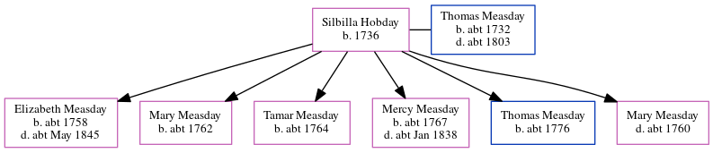

Silbilla Measday (née Hobday) 1736 -
[ Home ] | [ Calendar ] | [ Surnames Index ] | [ Errors ] | [ Family History ]Silbilla Hobday, the 5 times great-grandmother of Nigel Horne, was born in Stodmarsh, Kent, England in 1736 and married Thomas Measday (with whom she had 6 children: Elizabeth, Mary, Tamar, Mercy, Thomas and Mary) in Stodmarsh on 11 Apr 17571. In 1757, she was living at her birthplace2.
Children
- Elizabeth was born c. 1758
- Mary was born c. 1762
- Tamar was born c. 1764
- Mercy was born c. 1767
- Thomas was born c. 1776
Citations
- Familysearch.org (www.familysearch.org)
- England, Select Marriages, 1538–1973 Ancestry.com Operations, Inc.
Family Tree
Map
Generated by ged2site. Last updated on Jul 3, 2024
Known Issues
Birth date (1736) has no citations